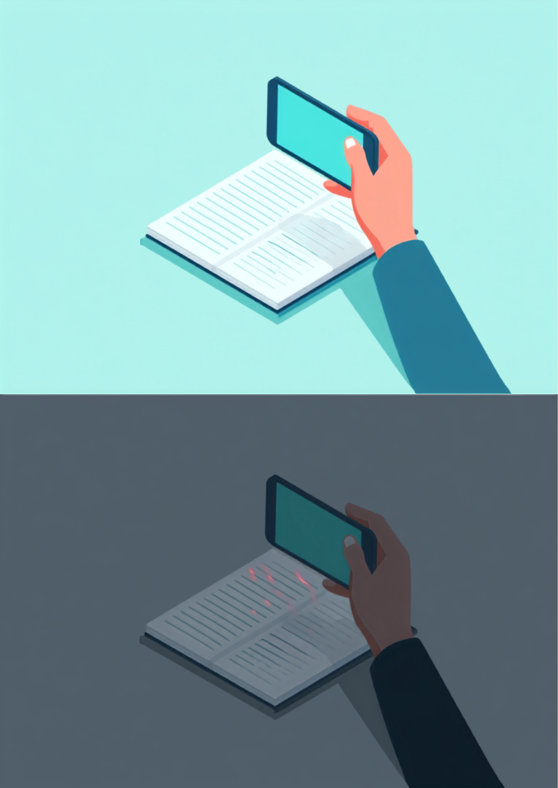

❓ Preguntas frecuentes
Resuelve tus dudas más comunes sobre el curso, organizadas por tema.
📤 Entrega de trabajos
¿Cómo se califica si entrego a tiempo o tarde?
Toda actividad entregada en tiempo y forma tendrá el valor máximo de la rúbrica correspondiente. Si se entrega fuera de tiempo, el valor máximo se reduce a la mitad, ya que en muchas ocasiones el trabajo tardío corresponde a una copia de un compañero que sí cumplió en tiempo.
¿Puedo reentregar un trabajo si me fue mal o no entregué?
Solo se aceptan reentregas por situación médica justificada (enfermedad), y debe acompañarse del justificante médico correspondiente. Fuera de este caso, no se reciben reentregas.
¿En qué formato debo entregar mis trabajos?
Los formatos aceptados son PDF, Word, Excel o PowerPoint. No se aceptan fotos, salvo que el profesor lo indique expresamente (por ejemplo, en trabajos hechos en cartulina que no se puedan subir como archivo digital). Si te piden una foto, asegúrate de que tenga buena iluminación, la letra se lea con claridad, y que tu nombre esté escrito con pluma en la parte superior de la hoja.

¿Qué pasa si no llevo mi USB al laboratorio de cómputo?
Podrás entrar al taller, pero no podrás realizar la práctica correspondiente ni guardar tus archivos en las computadoras, ya que el equipo cuenta con un programa que borra todo uso al apagarse o reiniciarse. Deberás trabajar la actividad posteriormente, y tendrá una ponderación menor por no haberse realizado en la sesión correspondiente.
📊 Calificación
¿Cómo se calcula mi calificación del trimestre?
Se obtiene sumando el desempeño en actividades, tareas, rúbricas y proyectos del periodo. El peso de cada rubro puede variar ligeramente entre trimestres.
¿Cómo se calcula mi calificación final del año?
Se obtiene sumando las calificaciones de los 3 trimestres. La calificación mínima aprobatoria en cada trimestre es 6.
¿Qué pasa si repruebo algún trimestre?
Si repruebas 2 trimestres, deberás presentar examen extraordinario — a menos que en el último trimestre obtengas una calificación de 8 o superior, en cuyo caso no será necesario.
¿Qué significa cada nivel de la rúbrica (Excelente/Bueno/Regular/Deficiente)?
Cada rúbrica dentro del sitio se puede desplegar dando clic para ver el detalle de puntos y descripción de cada nivel.
🧭 Uso del sitio
¿Qué significa el checklist de "Marcar como completada"?
Es una herramienta personal para que organices tu propio avance — te ayuda a llevar control visual de qué tareas ya trabajaste. Marcarla no significa que la tarea fue entregada ni evaluada; la entrega real siempre es a través del medio que indique el profesor.
¿Por qué no veo la misma información que mi compañero de otro grupo?
El sitio filtra el contenido según el grupo seleccionado (3°C o 3°E), ya que algunas tareas, rúbricas o fechas pueden variar entre grupos.
¿Cómo cambio entre trimestres?
Usa el selector "Trimestre 1 / 2 / 3" ubicado en la barra lateral del sitio (o al desplegarla en el celular), junto al selector de grupo.
¿El sitio funciona en el celular?
Sí, el sitio está diseñado para verse bien tanto en computadora como en celular o tablet.
¿Qué pasa si falté el día que se explicó un tema nuevo?
La responsabilidad de ponerte al corriente es tuya. Puedes apoyarte revisando el Temario del trimestre en el sitio y consultando con un compañero lo que se vio en clase.
¿Dónde puedo consultar el reglamento completo del taller?
Puedes descargarlo desde la sección de Tareas, dentro de "Reglamento del taller firmado", o solicitarlo directamente al profesor por el formulario de Contacto.
✉️ Contacto y dudas
¿Cómo le hago si tengo una duda sobre una tarea?
Usa el formulario de "Contacto" al final de la página de inicio, describiendo tu duda con claridad.
🛡️ Aviso de privacidad
¿Qué información recopila este sitio?
El correo y la contraseña que tú mismo creas para tu cuenta (no es tu correo institucional), tu grupo y número de lista tomados del registro oficial del profesor, y los archivos y respuestas que envías al entregar tus trabajos (Google Forms).
¿Para qué se usa mi información?
Únicamente para llevar el registro de tu avance y calificaciones en la materia de Educación Tecnológica. Nadie más que tú y tu profesor puede ver tu progreso — no es público ni visible para tus compañeros.
¿Dónde se guarda mi información?
Tu cuenta y tu progreso se guardan en Supabase (el proveedor de base de datos que usa el sitio); tus entregas se guardan en Google Forms/Drive, dentro de la cuenta institucional del profesor. Ninguno de estos servicios vende tu información ni la usa con fines distintos a los educativos.
¿Tengo que dar mi correo real?
No es obligatorio usar tu correo personal — puedes crear una cuenta con cualquier correo al que tengas acceso, solo para poder iniciar sesión.